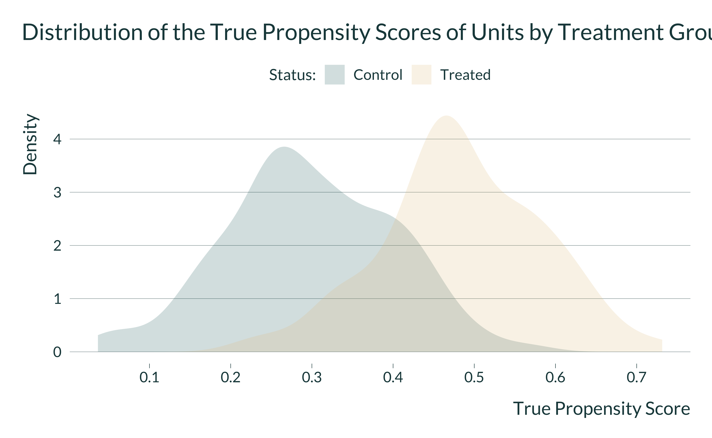
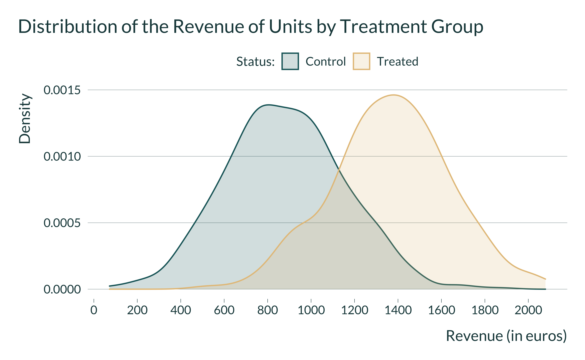
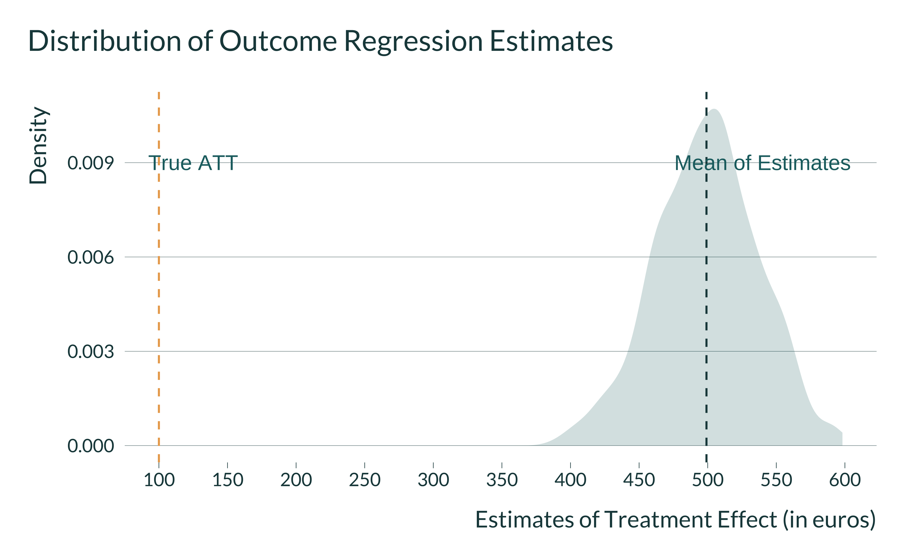
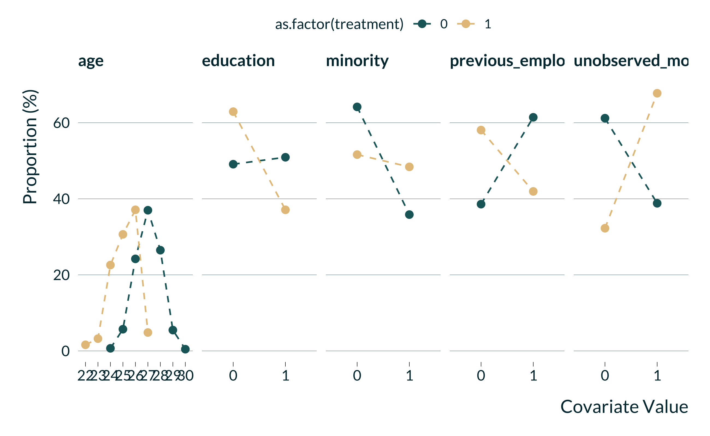

“In this document, we run a simulation exercise to illustrate the existence of a trade-off between Omitted Variable Bias (OVB) and type M error in the context of a matching procedure.”
In this document, we show through simulations the Type M error - omitted variable bias trade-off for observational studies relying on matching methods. We create fake-data similar to those used for analyzing non-randomized labor training program. Should you have any questions or find coding errors, please do not hesitate to reach us at vincent.bagilet@columbia.edu and leo.zabrocki@psemail.eu.
We first load the required packages to set-up the simulations:
# load required packages
library(knitr) # for creating the R Markdown document
library(tidyverse) # for data manipulation and visualization
library(MatchIt) # for matching analysis
library(lmtest) # for modifying regression standard errors
library(sandwich) # for robust and cluster robust standard errors
library(DT) # for displaying the data as tables
library(mediocrethemes) # vincent's custom ggplot2 theme
library(tictoc) # for measuring running time
library(beepr) # for making a sound when the code is done
library(here)
# set ggplot theme
set_mediocre_all(pal = "coty") #, background = TRUE) #for presentations
To illustrate the the Type M error - OVB trade-off, we simulate fake-data from a non-randomized labor training program targeting young individuals:
id).true_ps is drawn from \(N(0.3, 0.1)\) for control units and from \(N(0.5, 0.12)\) for treated units.y_0 = 2000 * true_ps + rnorm(n(), mean = 300, sd = 200)
We display below the code for the function generate_data_matching() which creates the dataset. Its single argument takes the desired sample size.
generate_data_matching <- function(sample_size) {
data <- tibble(id = 1:sample_size) %>%
mutate(
treatment = rbinom(n = sample_size, size = 1, prob = 0.25),
true_ps = ifelse(
treatment == 0,
rnorm(n(), mean = 0.3, sd = 0.1),
rnorm(n(), mean = 0.5, sd = 0.12)
),
true_ps = case_when(true_ps > 1 ~ 1,
true_ps < 0 ~ 0,
true_ps >= 0 & true_ps <= 1 ~ true_ps),
# generate the potential outcomes
y_0 = 2000 * true_ps + rnorm(n(), mean = 300, sd = 200),
y_0 = y_0 %>% round(., 0),
y_1 = ifelse(treatment == 1,
y_0 + 100,
y_0 + 50),
# generate observed outcomes
y_obs = ifelse(treatment == 1, y_1, y_0) %>% round(., 0)
)
return(data)
}
We run one iteration of the function generate_data_matching() to explore the resulting data with 500 units:
# run the function for a sample of 500 units
data <- generate_data_matching(500)
# display the table
datatable(data)
About 27.8% of units are treated. We display below the true propensity score distributions by treatment status:

We can finally see how the observed revenue is distributed across the two groups:

And we can check whether the ATT and ATC were correctly simulated. The ATT is computed such as:
and the ATC:
The data have been simulated as we wanted.
What would happen if we analyze our simulated datasets with a simple outcome regression model? Would we recover the true answer?
We first create a regression function to run a simple regression model where we simply regress the observed income on the treatment indicator:
We then simulate 1000 datasets of 500 units and run the regression model:
# first simulate simulation id
data_simulations <- tibble(sim_id = 1:1000) %>%
# then simulate data
mutate(data = map(sim_id, ~ generate_data_matching(500))) %>%
# finally run the reg analysis
mutate(results = map(data, ~ outcome_regression(.)))
# unnest the results
data_simulations <- data_simulations %>%
select(-data) %>%
unnest(results)
We plot the distribution of estimates:
data_simulations %>%
ggplot(., aes(x = estimate)) +
geom_density(colour = NA) +
geom_vline(xintercept = mean(data_simulations$estimate)) +
geom_vline(xintercept = 100, colour = "#EAA95C") +
scale_x_continuous(breaks = scales::pretty_breaks(n = 10)) +
xlab("Revenue (in euros)") + ylab("") +
labs(fill = 'Status:') +
theme(panel.grid.major.y = element_blank(),
axis.text.y = element_blank())

The average of estimates is equal to 501.
We now implement a simple matching where:
We implement below a propensity score matching procedure where:
We display the below the code for the function ps_function() which runs the matching procedure. It takes to inputs: (i) a dataset and (ii) the value of the caliper.
# propensity score analysis function
ps_function <- function(data, caliper_value) {
matching_results <- matchit(
treatment ~ id,
distance = data$true_ps,
caliper = caliper_value,
data = data
)
data_matched <- match.data(matching_results)
proportion_matched <- sum(data_matched$treatment)/sum(data$treatment)*100
true_effect <-
mean(data_matched$y_1[data_matched$treatment == 1]) - mean(data_matched$y_0[data_matched$treatment == 1])
model_fit <- lm(
y_obs ~ treatment,
data = data_matched,
weights = weights
)
ps_att <- broom::tidy(coeftest(model_fit, vcov. = vcovCL, cluster = ~ subclass),
conf.int = TRUE) %>%
filter(term == "treatment") %>%
select(term, estimate, p.value, conf.low, conf.high)
return(bind_cols(ps_att, proportion_matched = proportion_matched, true_effect = true_effect))
}
We run the function on the data we previously created:
# testing the function
ps_function(data, caliper = 0.5)
# A tibble: 1 x 7
term estimate p.value conf.low conf.high proportion_matched
<chr> <dbl> <dbl> <dbl> <dbl> <dbl>
1 treatment 152. 0.000000599 93.8 210. 71.9
# … with 1 more variable: true_effect <dbl>The function returns the estimate for the ATT, the associated \(p\)-value and 95% confidence interval, the portion of matched treated unit and the true value of the ATT.
We implement Monte-Carlo simulatiuons for a sample size of 300 units and differents values of the caliper:
data_simulations <- tibble(sim_id = 1:300) %>%
# then simulate data
mutate(data = map(sim_id, ~ generate_data_matching(300))) %>%
# generate caliper
crossing(caliper = c(seq(from = 1, to = 100, by = 1)/100)) %>%
# finally run the matching analysis
mutate(results = map2(data, caliper, ~ ps_function(.x, .y)))
# unnest results
simulations_matching <- data_simulations %>%
select(-data) %>%
unnest(results)
# saveRDS(simulations_matching, here("Outputs/simulations_matching.RDS"))
Once the simulations have been run, we compute the summary statistics using the summarise_simulations() function:
simulations_matching <- readRDS(here("Outputs/simulations_matching.RDS"))
summarise_simulations <- function(data) {
data %>%
mutate(significant = (p.value <= 0.05)) %>%
group_by(caliper) %>%
summarise(
proportion_matched = mean(proportion_matched),
power = mean(significant, na.rm = TRUE)*100,
bias_sign = mean(ifelse(significant, estimate/true_effect, NA), na.rm = TRUE),
bias_all = mean(estimate/true_effect, na.rm = TRUE),
.groups = "drop"
) %>%
ungroup()
}
We apply the function to data_simulations:
summary_simulations_matching <- summarise_simulations(simulations_matching)
And plot the results:
